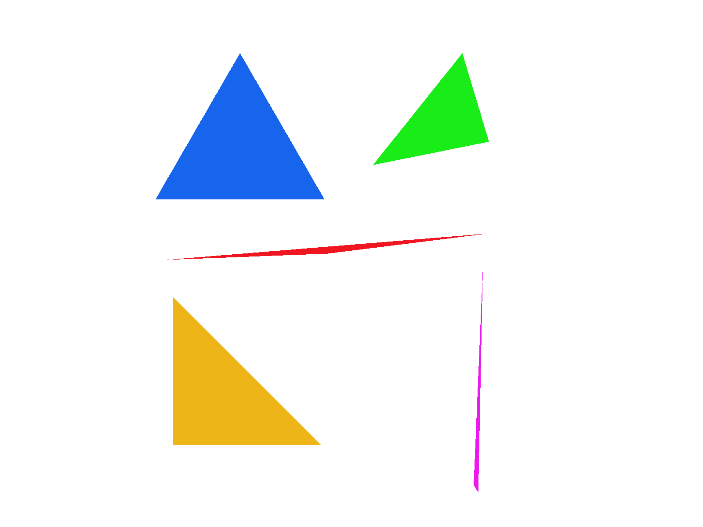

CS184/284A Spring 2025 Homework 1 Write-Up
Names: April Zhang
Link to webpage: cal-cs184-student.github.io/hw-webpages-apricots/hw1/index.html
Link to GitHub repository: github.com/cal-cs184-student/sp25-hw1-aprilcot
Overview
In this homework, I implemented rasterization, antialiasing via supersampling, transformations and level mapping or mipmapping.Task 1: Drawing Single-Color Triangles
In this task, I rasterized triangles using a 3 line test for point-in-triangle for the counterclockwise direction. I created a helper function callededgeFunction between 2 pairs of points to check which side of the plane that the pixel falls in.
If all values are positive and fall on the same side of the planes, the pixel is inside the triangle.
float edgeFunction(float x0, float y0, float x1, float y1, float x, float y) {
return (x1 - x0) * (y - y0) - (y1 - y0) * (x - x0);
}
To account for winding order, I calculated the winding order -- clockwise or counterclockwise, and converted to counterclockwise to simplify the test. If the winding order is negative, the points are given in clockwise direction, and positive for counterclockwise direction. Further, I limited my rasterization to the bounding box of the triangle to optimize the process. This restricts sampling to withing the bounding box, and therefore means that this algorithm is no worse than one that checks within the bounding box of the triangle.
Below are the results for test images 4 through 6, after completing the
rasterize_triangle function.
|

|
|

|
|
Task 2: Antialiasing by Supersampling
In this task, I made use of thesample_buffer data structure which stores all the colors for each pixel at the higher sampling rate.
To start, I modified the set_sample_rate and set_framebuffer_target functions to dynamically resize the sample_buffer to the new sampling rate size: widt * height * sample_rate.
Next, I modified my fill_pixel function to fill in the sample_buffer with color c at the correct location inside the sample buffer w.r.t. the x and y coords at all sample_rate points inside that pixel.
I then modified my rasterize_triangle function to sample at the higher sampling rate per pixel.
float px = x + (i % (int)sqrt(sample_rate)) / sqrt(sample_rate);
float py = y + (i / (int)sqrt(sample_rate)) / sqrt(sample_rate);
Then I set the value of sample_buffer with:
sample_buffer[(y * width + x) * sample_rate + i] = color;. This finds the position within the 1d array for the respective index i and sets it to color.
Finally, I modified resolve_to_frame_buffer to take the average of all the colors inside of 1 supersampled pixel for each r, g, b channel.
The major modifications to the rasterization pipeline included: - using the sample_buffer to store multiple samples per Pixel
- rasterizing the triangle with the higher sampling rate
- updating to average all the sample colors for each pixel and write the result to the framebuffer.
Essentially, we used supersampling to increase the sampling rate. We divide each pixel into sampling_rate amount of smaller pixels. Computing the average of these colors when writing to the frame buffer helps to remove jaggies and blur edges, because we are able to capture a "higher granuality" of the color at each pixel by increasing the sampling rate.
|
|
|
|
As the sampling rate increases, the edges of the triangles become more blurred, reducing the appearance of jaggies with less isolated pixels. These results are observed because when we supersample we are able to capture the color at a higher granularity level, thus capturing more "in between" colors per pixel. This helps to smooth out the edges.
Task 3: Transforms
In this task, I implemented the translate, scale, and rotate functions. Here I made cubeman make the robot pose.|
|
|
Task 4: Barycentric coordinates
In this task, I implemented barycentric coordinates for color interpolation across triangles. Essentially, barycentric coordinates are a way of representing a position inside a triangle as a weighted sum of the vertices of the triangle. Hence, the formula \((x, y) = \alpha A + \beta B + \gamma C\), where \(\alpha\), \(\beta\), and \(\gamma\) are the barycentric coordinates of the point \((x, y)\) with respect to the vertices \(A\), \(B\), and \(C\) of the triangle, and \(\alpha + \beta + \gamma = 1\).In the below image is an example where the vertices of the triangle are red, green, and blue, and using barycentric coordinates we are able to interpolate the colors across the triangle to create a smooth gradient blend between the three colors.

Here is the result of the barycentric interpolation for test7.svg with default viewing parameters and a sample rate 1.
Task 5: "Pixel sampling" for texture mapping
Pixel sampling is essentially the process of mapping a 2D texture image onto a 3D surface. More specifically, it is "looking up" the color on the texture map (the uv coordinates) to apply to the surface. How I implemented pixel sampling was:- I followed a similar process in the previous tasks where I created the bounding box and interpolated the barycentric coordinates
- Then, I filled out the SampleParams struct as per the hint, setting the default mipmap level to zero as per the spec.
- Called the helper functions,
sample_nearest and sample_bilinear according to the psm value.
The sample_nearest function simply finds the closest integer coordinate on the texture map and grabs the corresponding color at the at location. In contrast, the sample_bilinear method finds the four nearest integer coordinates to the point in question and performs linear interpolation based on fractional distances to find the color at that point. Generally, bilinear sampling is provides smoother color transitions but is more computationally expensive.
|
|
|
|
|
|
One can see from the screenshots that the bilinear sampling seems to have a smoother color transition if you look inside at the blue band across the middle of the close up picture. The biggest difference seems to appear between bilinear and nearest sampling methods when supersampling is set to 1 sample/pixel (no supersampling). As number of samples per pixel go up, the difference between the two sampling methods is less noticeable.
Task 6: "Level Sampling" with mipmaps for texture mapping
Essentially, mipmaps are a set of precomputed and downscaled samples of the texture. This is useful for rendering far-away objects that do not require a high resolution. Level sampling is the process of selecting which mipmap level of the texture map to sample from. In discussing the tradeoffs between the three, supersampling, level sampling, and pixel sampling:- pixel sampling is where you sample directly from texture map onto surface. It is fast because we don't have to consider which mipmap level but can also use more memory than required for objects "far away" that don't require high resolution to render. Further there might be aliasing due to this.
- level sampling of sampling from mipmaps increases memory storage to store the mipmaps by x1.3, but is best at reducing aliasing. Level sampling might be slower because you have to precompute the mipmaps and store them.
- supersampling is very good at reducing aliasing, but might be more expensive to compute relative the number of samples per pixel that is chosen.
|
|
|
|
|
|
Not sure if I did not select an interesting photo or if something is wrong with my code, but there do not seem to major noticeable differences between the 4 different combinations of sampling.